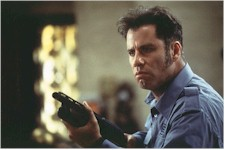
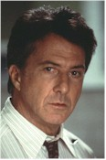
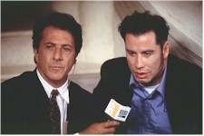

Contents | Features | Reviews | News | Archives | Store |
 |
|
| Movie Credits | Buy It! |
Mad City
Review by Carrie
Gorringe
Posted 7 November 1997
 |
Directed by Costa-Gavras Starring
Dustin Hoffman, John Travolta, Screenplay by Tom Matthews |
In a discussion with a friend of mine yesterday, the topic of Costa-Gavras’s film career was front and center. During the course of this conversation, it was noted that there were actually two Costa-Gavrases: the good Costa-Gavras of the 1960s and’70s, director of the suspenseful Sleeping Car Murders, and political dramas such as Z and Missing that were understatedly brilliant, and the bad Costa-Gavras of the 1980s and ‘90s, who produced melodramas such as Betrayal and Music Box – films that were so overblown in treatment and theme so as to obscure any such foolish notions as good intentions on the filmmaker’s behalf. It was also remarked, with rather sardonic wit, that the difference between the two Costa-Gavrases wasn’t always immediately apparent; only after prolonged exposure to a given work could one determine whether or not the omnipresent tone of outrage was going to lead to a significant payoff in terms of audience enlightenment.
Sadly, Mad City falls into the "bad" category. Costa-Gavras and his screenwriter spend too much time trying to inject allegorical richness into such shopworn themes as the concept that power corrupts, and worse, tries to sell this as uncharted philosophical terrain. Certainly Costa-Gavras tries to apply a new patina to the tiresome proceedings, by making the miserable pas de deux between ambitious newsman Max Brackett (Hoffman) and laid-off security guard-turned hostage taker Sam Baily (Travolta) into a critique of corporate downsizing. The screenwriters work very hard to make Baily (whose surname evokes memories of the equally-downtrodden George Bailey from Capra’s It’s a Wonderful Life) into an everyman-hero for the 1990s: Baily wants only to return to work, but feels powerless to influence his heartless boss (Danner). Obviously a believer in the precept that justice emerges from the barrel of a gun, Baily takes one with him only to make his boss see reason, but, as with everything else in Baily’s life, things quickly get out of control. He is a person to whom things happen, rather than someone who makes things happen. Consequently, he is the perfect patsy for the murderously ambitious Brackett and his scheme to turn a relatively minor incident into a media free-for-all with Bracket firmly in charge.
Costa-Gavras and his screenwriter also succeed in depicting the equally brutal tendency of the contemporary press to make even the most minor of news incidents into days-long special reports. Appropriately snazzy graphics and a paucity of actual content become the substitutes for reality. As Mad City makes painfully clear, the news vacuum allows those with ideological axes to grind to fill in the details to their own tastes, the truth be damned, and the film tears into the mindless yahoos who have nothing better to do with their lives than follow the miseries of others. The circus-like atmosphere that surrounds Baily’s self-constructed predicament is aptly portrayed here, in a manner reminiscent of Billy Wilder’s corrosive examination of a similar non-incident made into more than it deserved, 1951’s Ace in the Hole. Just as in Wilder’s film, we have an ambitious news hound who is about to discover the nasty fact of unintended consequences, particularly when he encounters those who are more ambitious than he. In Brackett’s case, he encounters his now-successful former nemesis, a vicious piece of work named Kevin Hollander (Alda). Hollander still bears a grudge because Brackett exposed Hollander’s stupidity for the world to see and power has not softened Hollander’s urge to return the favor.
With these nods to a Capra-Wilder pedigree, Mad City should have been able to cobble together a sufficient amount of talent to make all of these unwieldy elements fall smoothly into place. Instead all the audience hears is the sound of a film thudding to the floor in its final death throes. Costa-Gavras is too preoccupied with mining the overly obvious aspects of this film (the uncharitable might refer to it as strip-mining); among other examples of silliness, the audience is treated to several overhead and full-frontal shots of thousands of camera people and well-coifed, empty-headed "interviewers" all racing forward at the slightest provocation from Brackett or Baily. The image is less symbolically akin to a stampede than to the image of lemmings heading mindlessly toward a cliff. Costa-Gavras, unfortunately, milks this initially effective imagery for far more mileage than should have been intended. By the time the fourth repetition (or is it the fifth?) of this series of shots takes place, the audience is beginning to wonder if all of the hot air is exclusively confined to what is on the screen. The charge is especially serious and relevant since the scriptwriter hasn’t bothered to do anything along the lines of developing a compelling narrative line to prevent geographical confinement from becoming narrative confinement.
Under the circumstances, characterization becomes one of the earliest casualties of this inept approach. Travolta and Hoffman, perforce, play their roles like straw men, alternating far too often between parodies of cowardice and ruthlessness for anyone to gain any sort of insight into what makes their characters tick. Moreover, all of the characters spend much of their time blaming everyone else for their problems, especially Baily, and this is a serious problem; as the moral center of the piece – the noble savage, if you will, he is expected to have some likeable qualities that distinguish him from the madness swirling around him. Instead, Baily adopts too many of his antagonist’s worst habits – self-pity the most pernicious of them – as the film goes on, and consequently becomes more of an annoyance than a focus for identification. Confusion and cliché masquerades as complexity in the actors’ performances; they become the synecdoche for the entire film. The end result then becomes more than a dishonest folie a deux; there are too many guilty parties responsible here for the indictments to stop at just two individuals.
If there is any good news to impart, it is simply that it takes far less time than the 110-minute running time to understand that Mad City is heading for the dramatic abyss. Nevertheless, this realization, coming as late as it does, may just have prevented certain audience members from attending a film that possesses real social significance by comparison, such as Starship Troopers.
Contents | Features | Reviews | News | Archives | Store
Copyright © 1999 by Nitrate Productions, Inc. All Rights Reserved.